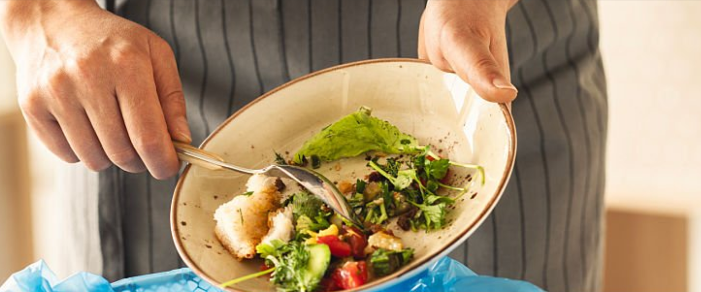

Madspild i hjemmet

Det samlede madspild fra danske husholdninger udgør 261.000 ton om året.
Hver dag bliver der smidt næsten 2.000 tons fødevarer ud i Danmark. Derfor er der fokus på at gøre det nemmere for forbrugere at undgå madspild og få mere information om, hvordan madspild kan reduceres.
Som forbruger kan du være med til at mindske madspild ved at planlægge dine indkøb, opbevare maden korrekt og bruge rester, før de bliver smidt ud.